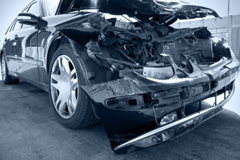

News
Sacramento Car Accident Claims
Sacramento Car Accident Claims
Medical Expenses
Lost Wages
Pain and Suffering Compensation
Longterm Disability
Emotional Distress
Insurance Negotiations
Insurance Negotiations
Claim Filing Process
Settlement Offers
Policy Limits and Coverage
UninsuredUnderinsured Motorist Claims
Bad Faith Insurance Practices
Legal Representation in Court
Legal Representation in Court
Litigation Process
Trial Preparation
Evidence Gathering
Expert Witness Testimony
Jury Selection
About Us
Contact Us

Litigation Process
Common Causes of Car Accidents in Sacramento
Common Causes of Car Accidents in Sacramento
Litigation Process
Sacramento Car Accident Lawyer
More here:
https://lawyers.findlaw.com/profile/view/4912344_1
https://www.yelp.com/biz/moseley-collins-sacramento-3
https://lawyers.justia.com/lawyer/moseley-cary-collins-iii-119369
Understanding Your Legal Rights and Responsibilities
Gathering Evidence and Documentation for Your Claim
Role of Insurance Companies in Car Accident Claims
Hiring a Sacramento Car Accident Lawyer
Potential Compensation and Settlement Options
Frequently Asked Questions
What are the initial steps a car accident lawyer takes in the litigation process?
The initial steps typically include gathering evidence, such as police reports and medical records, interviewing witnesses, and evaluating damages. The lawyer will also file a complaint with the court to initiate the lawsuit.
How long does the car accident litigation process usually take?
The duration can vary widely depending on the complexity of the case, court schedules, and whether parties settle out of court. It can range from a few months to several years.
What kind of compensation can I expect from a car accident lawsuit?
Compensation may include medical expenses, lost wages, pain and suffering, property damage, and sometimes punitive damages if gross negligence is involved.
Will my car accident case likely go to trial or be settled out of court?
Most car accident cases are settled out of court through negotiations or mediation. However, if a fair settlement cannot be reached, your lawyer will prepare to take your case to trial.
Litigation Process